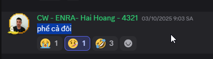
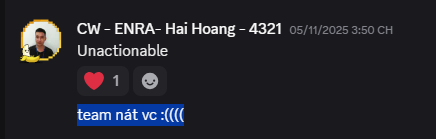
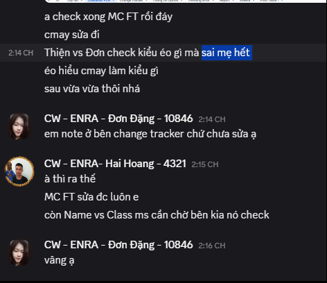
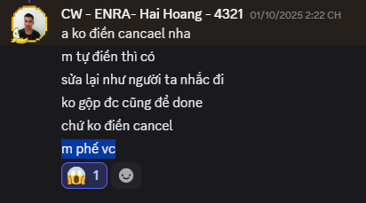
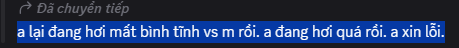
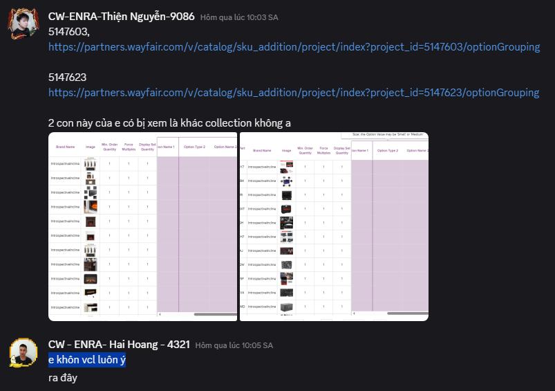
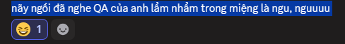
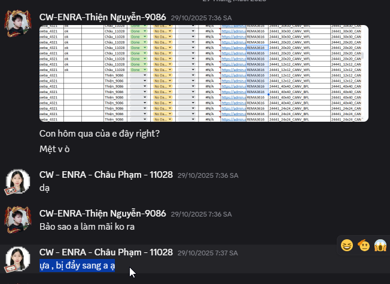

Còn việc ở đây chỉ đơn giản là e ngồi im, người ta nhờ thì giúp
Nhưng vẫn bị ghét. Cũng cho là e có phần tự mãn đi. Nhưng em không bao giờ chửi hay lăng mạ người khác kể cả mem thường hay cấp trên.
Còn việc ở đây chỉ đơn giản là e ngồi im, người ta nhờ thì giúp
Nhưng vẫn bị ghét. Cũng cho là e có phần tự mãn đi. Nhưng em không bao giờ chửi hay lăng mạ người khác kể cả mem thường hay cấp trên.
1. Sự khởi đầu
Này là hôm bão làm ở nhà, Thiện đk nghỉ bị sai, em sai thì nhận và sửa, chịu phạt. Nhưng cũng không biết rõ đùa hay thật, cấp trên của Thiện đã ngay lập tức đâm chọc vào Thường thì cấp trên nói đỡ cho cấp dưới hoặc không nói gì, em khi đó cũng không để tâm lời nói này, mọi thứ vẫn bình thường.
2. Phát triền
Khi bắt đầu phải đi sp nhóm khác, phải học và làm việc mới, tất cả đều không quen thì mọi sự đãu phát triển xấu đi
Đúng thật là làm QA phần việc sẽ áp lực hơn nhưng đó là công việc của QA cần làm Đúng là cấp trên có quyền phê bình cấp dưới nhưng nói kiểu này thì em không chấp nhận được.
3. Tiếp tục thị phi
 Em biết em không giỏi, cũng chưa bao giờ tự nhận mình làm tốt. Với đầu việc của nhóm phải học và làm việc mới liên tục chứ không làm 1 việc liền mạch thì sai sót là khó tránh khỏi Em cũng làm nghiêm túc hẳn hoi chứ không hề phá hay lười. Cái nào sai vẫn nhận và sửa
4. Với mem khác trong team
1 lời xin lỗi chân thành cho 1 mem khác trong nhóm. Khồng biết được là trước đó đã nói ra những lời cay nghiệt như nào để phải xuống nước nói ra câu xin lỗi này Nhưng lời nói khỏi miệng thì vẫn lưu lại trong dầu người khác, không phải cứ xin lỗi là xong. Nó kiến bạn ấy mất tự tin, làm việc gì cũng sợ sai
Chắc do mem này thân với e nên không may bị ghét lây. Chứ mem khác vào sau lỗi như nhau nhưng nói nhẹ nhàng lắm ạ. Hoặc cũng có thể là mới đấu thế. Sau không biết như nào. Buổi đầu ảnh cũng nói nhẹ nhàng với mem ở trên lắm ạ
5. Đối xử với mem
Hỏi nhưng luôn nghĩ em thái độ, tránh việc.
Bình thường thì không sao, nói chuyện cũng vừa tai nhưng hôm nào gặp file mới, khó, nhiều hoặc mem làm sai gì đó thì lại như thế Còn combo hành động đánh máy như đập bàn phím nữa
Không nói điến công việc, kỹ năng làm việc như thế nào nhưng QA nhà em hay đi nói xấu mem lắm ạ Nhắn với người khác là "thằng Thiện hãm", đi hâm cơm nhưng lại cùng mem team khác nói xấu mem nhóm mình, nói xấu Thiện cùng 1 người khác trong nhóm Gì mà "toàn làm sai xong anh phải sửa cho". Lại nói ngay trước camera cty ở khu quay cơm chứ. ( 09/12/2025 ) Nếu mem không được sai thì QA làm gì có việc nhưng sai em tự sửa chứ chưa bao giờ nhờ ai sửa hộ.
Lúc nào cũng nói Thiện bị cái này, bị cái kia. Nhưng nếu chia sai việc hoặc có gì đó hơi khoai thì đẩy luôn phần việc sang cho Thiện Em không phản kháng, cũng không ý kiến gì. Trước giờ ai chia gì em vẫn nhận làm nhưng QA cứ nói xấu kiểu như em chẳng làm được việc gì
Không biết là ảnh đối với người khác như nào nhưng kiểu này khó nói lắm
6. Mọi thứ không còn được bình thường nữa
7. Cảm xúc của Thiện
Em Thiện trước giờ luôn muốn hòa đồng với tất cả mọi người, kể cả cấp trên, nhiều hay ít tuổi hơn. Em khẳng định chưa bao giờ chủ động gây thù với ai nhưng nếu cấp trên liên tục chửi và xúc phạm mình thì e cũng đối lại người như vậy Nếu mọi chuyện cứ tiếp tục như này thì xảy ra xô xát là không thể tránh khỏi. Nếu không nói động đến nhau thì không có bất hòa. Còn lỡ rồi thì sẽ có lúc cần giải quyết triệt để.
Những lời này nói ra không phải để phân bua xem ai đúng ai sai. Đúng sai không còn quan trọng nữa rồi ạ. Quan trọng là e cũng không biết nên xử lý sự việc như nào Lời nói ra rồi không thu lại được, khi đã mở miệng chửi người thì đã định sẵn phải gặp báo ứng. Em cũng mong muốn được giải quyết 1 cách nhẹ nhàng, gọn gàng hơn ạ.